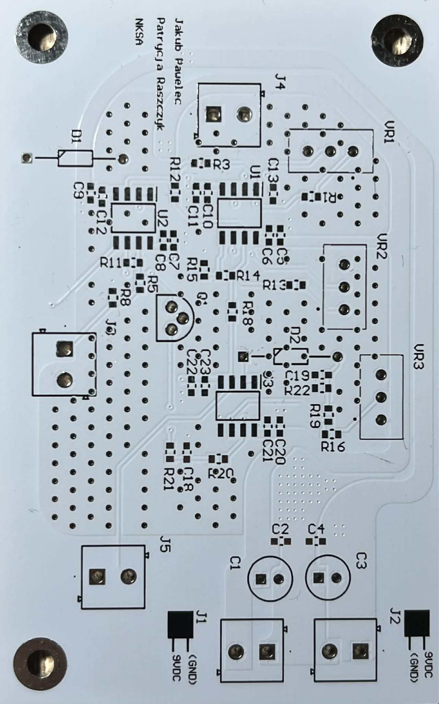
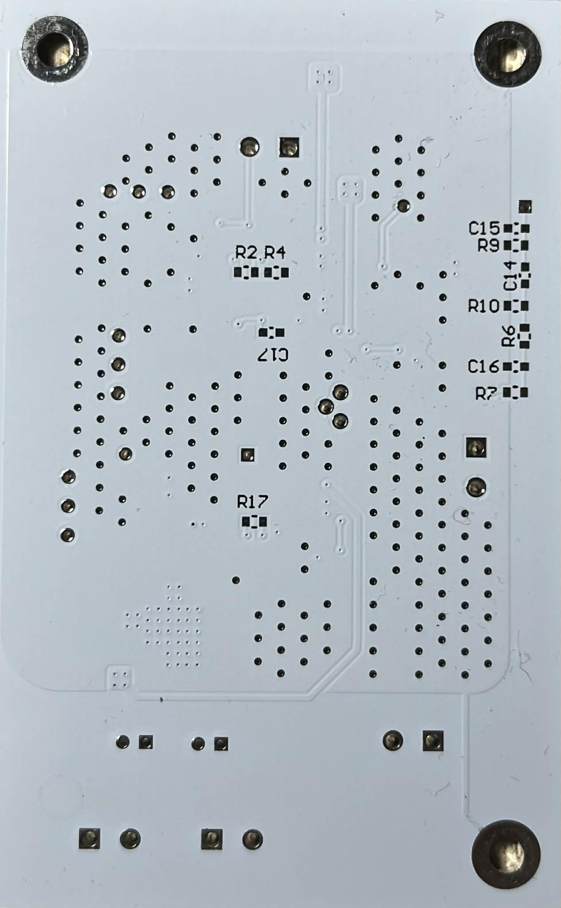
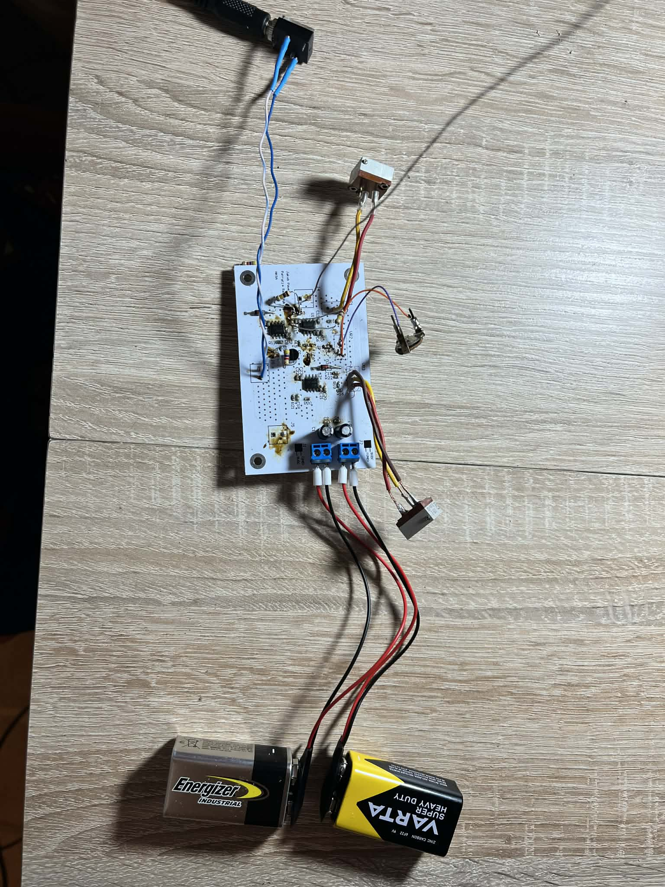
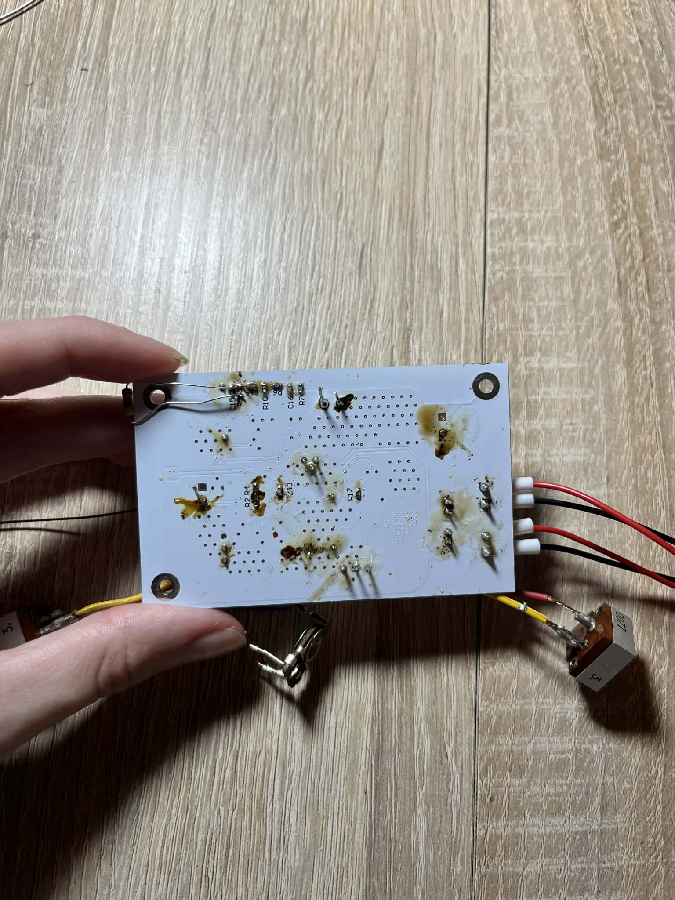

Theremin -Projekt Patrycji Raszczyk (194417) i Jakuba Paweleca(194523)
Czym jest Theremin?
Theremin jest elektrycznym instrumentem muzycznym. Charakteruzyje się nietypowym dźwiękiem brzemienia, który można porównać do "kosmicznego"???
Wyróżnia się również tym, że grając na nim muzyk nie dotyka go. Dźwięk powstaje po przez zbliżanie rąk do anten. Wynika to ze zjawiska zmiany pola elektromagnetycznego
a dokładniej ze zmiany pojemności anteny.
To zjawisko można porównać do działania kondensatora. Można wyobraźić sobie, że jedną z okładek kondestaora są ludzkie palce, natomiast drugą antena.
Ponieważ pojemność zależy między innymi od odległości między tymi okładkami ruch ręki powoduję zmianę tej pojemności. W konsekwencji ta zmiana wpływa na
częstotliwość oscylatorów w układzie co przekłada się na zmianę wysokości oraz głośności dźwięku.
Zasada działania układu
Układ thereminu obejmuje tor wysokości dźwięku (pitch), w którym znajdują się dwa generatory: oscylator odniesienia oraz oscylator zmienny połączony z jedyną anteną reagującą na ruch dłoni.
Oba generatory zbudowano w oparciu o wzmacniacz TL082 oraz zestaw rezystorów, kondensatorów i potencjometrów, umożliwiających precyzyjne strojenie instrumentu.
Przy antenie znajduje się niewielka pojemność (rzędu kilku pF), która zmienia się, gdy użytkownik zbliża dłoń.
Ta zmiana pojemności przesuwa częstotliwość oscylatora zmiennego. Następnie sygnał z obu oscylatorów jest porównywany, przechodzi przez dzielnik
napięcia i trafia do bufora. Za buforem umieszczono zestaw elementów filtrujących sygnał w tym AM Detecor, który jest szeroko stosowany w systemach audio.
Wbudowana przeglądarka projektu - Altium Viewer
W poniższej przeglądarce można zobaczyć końcowy projekt składający się z: widoku 3D płyty PCB , schematów (SCH), projektu układu PCB i listy komponentów
Relizacja płyty PCB
Płyta została zamówiona na stronie JLCPCB.
Poniżej znajduje się zdjęcie (z przodu i z tyłu) pustej płyty PCB.


Monaż elementów na płycie


Filmik działającego układu
Należy zaznaczyć, że inspiracją do powstania projektu był tutorial opublikowany na YouTube (link do materiału zamieszczono poniżej).
Otwórz w nowej karcie